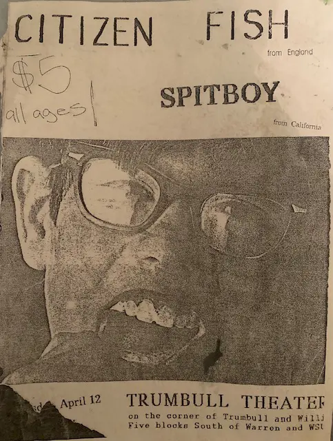

Blog
Archive
Archive
It was April 12th 1994, I was 22 years old and rolled up to a punk show in Detroit with the bands Spitboy (CA) and Citizen Fish (UK) at a place I had never heard of called The Trumbullplex.
The bands had been staying with me at 516 McCourtie in Kalamazoo. I had been living in Kzoo a year or two and was pretty involved in the local music/punk scene, including hosting shows in our basement with my good friend Brian and other community members. These bands were booked for our short-lived all ages venue called Dagobah Square for Wednesday April 13th, (the day after the Detroit show). Dagobah was an old laundry mat that members of the punk community took upon themselves to turn into an all ages space (which is always worth it no matter how long it lasts), but that’s another story.
My guess is, coming from their last show these two touring bands started to have van troubles and made their way to the next closest gig, which was us. I recall Richard the Roadie was out back working on the van a lot, and Dick Lucas had an intense body odor, and at one point, we all crammed into Hey Juans for burritos on campus. I really liked talking to Trotsky from Citizen Fish and I was a big Spitboy fan. My assumption then was they were an all female hardcore band (from the Bay Area) but I don’t know how or if they actually identified that way personally or in regards to the band. Spitboy always talked in between songs about important issues and was fierce AF! I had seen them in 1992 but I don’t think we talked much then.
Just to mention, that show in ’92 was at “The Pole Barn” in Otsego, just outside of Kzoo. Green Day was on the bill but dropped off because they were about to make mainstream gold.
Anyways, one of us lent a van to help get Citizen Fish and Spitboy to their Detroit gig 2 ½ hours away and then back to Kzoo. It was not uncommon to “get in the van” or to try and catch multiple shows and as I was up for some adventure, I jumped in the van with them to their Detroit shows.
To tell the truth, I barely remember that first time at the Trumbullplex. Maybe we came in late or I was helping the bands and then left immediately after the show, or maybe it’s just that it’s been over 30 years, who knows? Whatever the case, I do vividly recall pulling up in front of those two old red Victorian mansions with a driveway in between them. There were “kids” all over the place and I remember thinking, “Holy shit! This is amazing!” It was love at first sight. Even having a great love for what we were doing in Kalamazoo this was kinda unbelievable. Since then, thousands upon thousands of people have had a similar experience at the Trumbullplex. If it was at first impressive, or intimidating, soon enough it was inspiring.
-Jhon ClarkIt was the mid 80’s, I was 13 and maybe you have seen the amusing viral videos that describe how kids were pushed out of the house to go run wild in the streets all day...it was something like that for me. I had a friend around that time who lived in a small basement level apartment in our little town and her name was Janice. Janice was a young teen, about my age, was not shy and a lot of fun. Nowadays, one might say she gave no fucks. When we were getting ready to go out she would just wear her bra around me and insist I lit her cigarettes and put it in her mouth, while she wielded a curling iron in front of a small bathroom mirror. It did not matter if I saw her breasts (and maybe she wanted me to?) and she’d always say, “God, they’re just my boobs!” We used to hang out at Janice's, whose Mom was raising her solo, and wasn't usually around so we didn't have to hide that we did a little drinking and smoking pot around her place. Listening to Janice’s version of her Mom, I don’t think we found her to be exceptionally cool or anything. It wasn't unheard of to be sympathetic towards parents or to what a single parent goes through raising kids, but it was unlikely at our age. I’m sure it was not easy for her Mom.
My first love was named Ronnie and she was a “bad girl,” troubled home life, swore a lot, got in trouble at school, smoked, drank, fought, explored sexual activities, and was a heartbreaker too. For a while we were a middle school power couple. When Janice’s Mom wasn’t around, which was usually the case, there was a lot of making out, shirts coming off and getting inside of sleeping bags and stuff that needed to happen because we had hormones that were out of control. Maybe we would go swimming or something after. Ronnie, Janice and my friend Brian who also “dated” Janice and Ronnie, off and on, all lived near each other and near the local bowling alley too (complete with little woods behind it which was a convenient place to smoke cigarettes and have a fire), not to mention the party store across the dusty bowling alley parking lot, which made it more likely we could score some booze when hanging out around there. It was one of a handful of hangouts in that area which included the nearby elementary and high school which had little nooks, bleachers, swings and large cement tubes to sit on or make out in.
Aside from exploring our current partner at the time’s hot bod, we roller skated (all night skates, what!) and of course we liked music most of all. What music you knew, like whether or not you actually listened to heavy metal, was too often a signifier of how cool you were, along with if you smoked and would be invited to partake. It was a small town and people thought they had something to prove. For example, even if you didn't know a band but had their t-shirt or poster, that could qualify you as a poser. I had heard The Electrifying Mojo on late night Detroit radio and wore my aunt’s red and white B-52’s jersey ala the cover of their first record and tried to talk about the music Mojo played wanting to be cool but I didn't even really know who the B-52’s were or anything much about new bands until I discovered Prince.
Janice had this tiny tiny bedroom and on one wall was a giant poster that across the top read T.S.O.L. and I simply had no idea what that was about. It seemed like it could be a band but didn’t look metal. It didn’t look like it was from the 60’s or 70’s, but it was still cool. Janice’s mom worked at a bar in Detroit called Traxx that did a lot of shows: local rock, metal and punk shows from 1981 to 1989. TSOL played there in 1984. Some big shows happened at Traxx, many bands’ first appearance in Detroit occurred there, like The Birthday Party, Minutemen, Sonic Youth, Husker Du, etc . . . but if you had said “punk” let alone “hard core” to me back then I would have had no exposure to it yet for it to register. Maybe I had heard Snake Plisskin say it (in a different context) in “Escape from New York” or maybe I heard it in “The Warriors” or something, but probably not even that, though soon enough I would find out that there was something happening out there and would learn it was called Punk.
I don’t remember how it came about but it was decided Janice’s mom would take us little hooligans into her world to a show in Detroit, March 3rd, 1985, to be specific. We were to see a band from Texas called The Butthole Surfers. It’s likely I had even heard of this place,Traxx where she worked because I listened to WLLZ, WABX and other radio stations that on occasion mentioned local bands and their gigs. Bands like Seduce and Rhythm Corps, Tommy TuTone, etc were trying to “make it” in rock n roll and were in fact playing at Traxx. More hair metal than heavy metal often, but as always Detroit offers good bands and venues that you probably still have not heard of. Not sure why Janice’s Mom decided to take us to that particular show, maybe Janice talked her into it or maybe since The Butthole Surfers had played the month before and she thought they really stood out as something to witness and thought, “hey, why not take the kids out and have their minds blown and give them a taste of the world outside of Joan Jett or Motley Crue,” either way, she made the offer. Joan Jett just to mention, had played Traxx a few years before and the three of us thought she was so cool, of course we had no idea about The Runaways.
One thing for certain my mind was in fact blown and my understanding of music and culture was overturned that night, which is probably not so unusual for a kid at a Butthole Surfers show. There was a review of their previous Detroit show in February that does a good job explaining how fucked up and weird they may seem to most people, and when I say MOST that is exactly what I mean. I can’t remember much of what went down that night other than it was indeed an all ages early show, with doors at 5 o’ clock, but you can check it out for yourself by going to YouTube. There is a video released using both the February and March Detroit performances called “A Blind Eye Sees All.” Some of what I recall from that night seems to be missing in the video but is mentioned in the review from the February show, which is odd, but at the time I certainly wasn’t sure why the person on stage with really large hair had their hands down their pants and would pull them out bloody! Or what exactly was going on with the sounds they were making! The local band, Angry Red Planet moved me to truly want to find more music like them. As for the rest of it, only much later did I come to appreciate how awesome it is to create anything you want to, especially when it doesn’t fit into what everyone else seems to be trying to do.
I wish I could get back in touch with Janice and Ronnie, but it has been so long I am quite certain it would be weird, maybe... yea, it would. I would love to get their version and recollections of our first punk show together, which sent me down a path of adventure and life lessons I am very grateful to have traveled along.
-Jhon ClarkFrom 36 an age in (dis)order
jhon clark
(published 2010 white print inc/upsidedown culture)
on the occasion of what would have been Dave K’s 47th birthday
dirty working hands do and don’t now
the news punctured my love line
a hole appeared
and when both eyes opened, they rained
melting everything
left
placed that one, hand over eye
I saw
an irreplaceable friend, again and again
howling
off a warm brick chimney
trying, to climb, onto the full moon
rising up
a detroit pheasant- caw caws/claws
out of the darkness
encouraging the other(s)
go to the river
let the gulls cry for you
the willows weep
thew ice sheets break down-
cold thinking
this long winter, it’s finally over
Spring has arrived
not, in time
in love
of growing-stronger
still, together
flowing through our
dirty working hands
now
3/30/2008
Decide to take a bruised day
Eat a peach
(our most blessed fruit)
And wonder
What vibrates underneath
When precious hands are in the air
Thrown upward, in a ritual dance
Unlike simple mechanisms
After a few tokens are inserted
We become gatherers, within a bite
Hardcore and provocative hunters who will sing
For that-taste
The life of a big star, pi in the sky
Charting the limits of memorical points
The power of a juicy dream made from a labor
Transforming broken coded Star Trek messages
Into another form, where possible outcomes
Explode upside down, illuminating worlds within our own
This is not high on rocket fuel tech
Forcing nature into a power vacuum energy blender
Where past is present, as above so below mumbo jumbo
Contemplating “is that me up there?”, in the heavens
Interrupted by a spray of sweet summer juice
Which arcs and descends into the wave of a hand
Goodbye-cliche
food for a thought, a moment, then
Our eyes open, know
Closed, don’t know
Open, don’t know
Closed and afraid to open
For The fear of existing, in that space between-us
diffused growing pains, determine our coordinates for the future
From out of the cold, the value of consciousness
Finally, the fire is named as such and the light
Shines on the stranger’s death
Along the path where we are moved and
The transformation is as precious as
The pit or the seed into another
“But the tree grows only from deep roots”
- Ursula LeGuin, from "The Language of The Night"
 I graduated from high school with a fist in the air—no, literally. After three years, I encountered some trouble with the West Bloomfield High administration (and to clarify, I certainly did not grow up in West Bloomfield). Ultimately, I came to an agreement, primarily with the Vice Principal, to forgo my senior year classes at their institution. Instead, I would transfer the final credits I needed to graduate by taking courses through Indiana State University correspondence courses, allowing me to earn my diploma and participate in commencement. When that time finally arrived, I was definitely excited that chapter of my life was over, and looking every bit the part of an 18-year-old thrasher, I proudly raised my fist in victory, which ended up gracing the cover of the local newspaper. Ha, what a joke.
I graduated from high school with a fist in the air—no, literally. After three years, I encountered some trouble with the West Bloomfield High administration (and to clarify, I certainly did not grow up in West Bloomfield). Ultimately, I came to an agreement, primarily with the Vice Principal, to forgo my senior year classes at their institution. Instead, I would transfer the final credits I needed to graduate by taking courses through Indiana State University correspondence courses, allowing me to earn my diploma and participate in commencement. When that time finally arrived, I was definitely excited that chapter of my life was over, and looking every bit the part of an 18-year-old thrasher, I proudly raised my fist in victory, which ended up gracing the cover of the local newspaper. Ha, what a joke.
At that time, I had a girlfriend, worked at a restaurant, and briefly delivered pizzas. I attended shows and partied with many friends. So many great shows! I saw Kreator, Voivod, Cro-Mags, M.O.D., Sepultura, Excel, King Diamond, Exodus, Agnostic Front, Slayer, and all that crossover genre and much more. I don’t have many flyers from that era though, mostly ticket stubs, AND this post is supposed to focus on Kalamazoo anyhow, so I digress.
Jhon's band 'The First Cavale'My first band went on hiatus after the summer I graduated when my best friend and bandmate moved to Kalamazoo, while I remained in Farmington Hills with my dad during my parents' divorce. After about a year, a few semesters at Oakland University, and almost becoming a father while simultaneously breaking up with my high school sweetheart—all at the tender age of 20—I decided to move to Kalamazoo. There, I became immersed in the music scene, evolving from an awestruck fan to a community member and organizer of events by the end of that first year.
I met Joel Wick in 1991 in Kzoo, before I moved there, at a tiny record store/venue called The Hole in the Wall he ran. I recall this because Nirvana's "Nevermind" had just been released, and we were listening to it. You should find The Jesus Lizard at the Hole in the Wall flyer as the first flyer in my "Kzoo/collaborators archive" section; it’s likely I have that because I grabbed it off the counter that day. I don’t remember what the venue was like or if it was located in the Skate Park—which was somehow connected to it—because I didn't attend that show or any shows there. There were a lot of amazing shows in Kalamazoo way before my time, in a lot of different places so I wanted to start with a flyer not from this Club Soda batch as a nod to that.
Brian and I got an apartment where we experimented with psychedelics, went to class most of the time, worked and attended these shows. Though we didn’t usually combine show going and drug use. At the same time I began meeting more people at Soda shows and was starting to have a lot of friends. The number of events Joel was involved in is not to be underestimated, and since we became friends, I started to help out, though not with the first handful of shows I went to. Surprisingly, I remember some of those shows well, while others, like Lungfish and Neurosis, I couldn't attend. I can imagine how awesome they must have been though. However, I did see Elliott Smith during his Heatmiser days, and the Afghan Whigs and Green Magnet School were absolutely phenomenal. UPSIDE DOWN CROSS was possibly the loudest, most obnoxious band I ever “experienced”—there was so much smoke that you couldn’t actually see them, and you really didn't want to be in the same room with that much volume and smoke, so I would venture in briefly for a dose of disorientation but mostly stayed out front. I missed Jawbreaker but saw them in Detroit around that time. The U.K. Subs were incredible, and Alice Donut remains one of my favorite bands and every show just killed it; it was such a joy to get to know them a little. I had a huge crush on Sissy, the bassist and singer, OMG! The Hyenas and Unsane took things to a new level, and more melodic bands with clever, inspiring guitar hooks, like Doug Martsch’s in Treepeople, the Poster Children, and Seaweed, kept me firmly on the post punk rock path. I wanted that so much!
This was my introduction to that music scene. Club Soda hosted great shows weekly and established itself as an underground indie rock institution as far as I am concerned. It employed local musicians and was a part of the community, even if we often shook our heads at the owner’s latest issues with how things were going. We knew the score; we were helping him generate significant revenue while paying some of the best bands in the country what they were asking, which contributed to our vibrant local music scene. Hats off to that guy though, for real!
In reality, this entire post could center on the local bands and people of the Kzoo music scene. I mean Leppotone Records- Sleestacks, The Sinatras, and King Tammy… so good! There were many diverse acts and an array of talented bands—from sleaze punk to dirgey Grunge grooves and guitar shredders—lest we not forget Purple Dave! This allowed us to pair bands in ways that were really exciting. All of the local bands on these flyers should be researched and appreciated especially now that it is easier than ever to share music and stories. And though many of the bandmates weren't always eager to play for little or no compensation, they did and helped create great shows for the touring bands and all of us. Definitely it was a team effort. No, it was a community effort.
The next generation seemed welcomed into the fold at Soda with our simultaneous basement DIY punk scene also thriving, which will be the subject of my next Kzoo installment. Bands like Deconstruction, Vine, Jihad and In Ourselves, which were part of the punk scene, also played at the bars and appreciated that it didn’t have to be one genre or different scenes as long as we had all ages events happening also. Club Soda hosted all-ages shows too, and it wasn't the only bar or cafe in town that did so.
I would say I came up in a place and time that was a musical oasis if you appreciated everything from Crash Worship to Crudos to Cap N’ Jazz like I did. The 90s were a special era for indie rock and punk bands. And as much as I cherish the early years of punk and the late 70s/ early 80s post punk and hard core scene that changed music forever; what we had going was simply picking up the torch and running with it.
Stay tuned for more blogs posts that continue the story as well as!
-Jhon ClarkUpside Down Culture Collective began as a collective project in Detroit circa 2001/02 and it was basically an anti war arts/activist crew which assumed its moniker in homage to the spirit of the anthemic song “The World Turned Upside Down”, in particular Billy Bragg’s version. Eduardo Galeano’s book Upside Down was also in the mix of why we had hit upon this name.
We participated in marches, curated cultural events, lectured, raised funds, had fun and threw our lot in with kindred spirits who believe in a passionate creative resistance to the domination of global capitalism. We made a lot of new friends and co conspirators along the way and for a good long while organized ourselves around the creation, production, and promotion of a book we called All The Days After: critical voices in poetry and artwork. In the end it was pretty sweet and the book is available here for donation. (I will take a closer look into this era of the collective at a later date within Part III. of the history of our collective.)
Eventually, I found myself, aside from maintaining the ATDA book distribution, checking emails and keeping up with correspondence to our PO Box (which included a few letters from prisoners) wanting to continue the mission with my new ideas. I ended up spreading myself quite thin, simultaneously involved in a handful of various collective projects pedal to the metal. Along the way I also managed to organize and collaborate on plenty of fun creative endeavors which were “Upside Down Culture presents” projects. Life became remarkably challenging and the excitement of the activist art stuff helped keep me going but it all caught up to me and choices had to be made, there was to be less activism in my future.
I hoped to keep the name and spirit of the collective alive though, believing our work had been vital and inspiring, even though “the collective” had ceased to exist. I was not ready to let go of Upside Down Culture so basically here I am 20 years later still finding new Upside Down Culture ideas and going at it…
In a way the UCC began as a result of the events following the NYC World Trade Towers attacks, commonly referred to as 9-11 though I think it was in the ether. What I mean by that is our community had been hosting events for quite some time by radical puppet troupes, authors, activists, playwrights and musicians and that's who we were too. I know from looking back on old journals at the beginning of 2001 I had been brainstorming around an idea of creating a “media explosions” group. It was to be a multi-faceted approach to storytelling I imagined as a cross between Food Not Bombs and Trumbullplex. Huh?
As activists, we were starting to see that using art as a way to fight against oppression and make our voices heard was one of the most powerful and valuable tools we had. At the very least it was the most accessible tool we had at our disposal. (Keep in mind, the internet was still just getting going at this point). We were already doing it (local art and activism) just not as a specific group with a name yet.
Not quite an aside, but maybe, I would like to mention there was a “9-11” which preceded the US tragedy. “The Other 9-11” involved the US backing of a very violent overthrow of Salvador Allende, the popularly elected leftist President of Chile on September 11th, 1973. There were mass executions and torture by the new military junta led by Pinochet and all this was becoming standard procedure for the way the US operated south of its so-called border.
Victor Jara was not only one victim of the violence but more than that he was a Chilean musician/artist activist who even after being tortured, used his talent to write a final song to help make sure the world knew what had happened to him and so many others. It was people like this, that Upside Down Culture members looked towards and had a growing awareness of, as part of our lineage. We thought it important to uphold this tradition and be storytellers and use “art as a weapon” to fight back against the ugliness of authoritarianism, white supremacy and just plain old stupidity.
*(UCC members led by Erik Ruin later retold the story of “The Other 9-11” using shadow puppets, projections, and narration with musical accompaniment).
Circa 1999/2000 in DETROIT, there had been organizing, demonstrations, and resistance around issues concerning POLICE VIOLENCE and REPRESSION against its citizenry and those who were ADVOCATES for CHANGE to the status quo.
It was definitely HEATING UP.
There was a WORLD WIDE RESISTANCE, also known as the “ANTI-GLOBALIZATION MOVEMENT,” spreading and trying to create CONDITIONS for REVOLUTIONARY CHANGE as well, and we were all IN.
So, as an EXTENDED COMMUNITY in Detroit, we easily came together and formed a SIZABLE ANTI-WAR COALITION in response to POST SEPT. 11, 2001 CURRENT EVENTS, such as TROOP DEPLOYMENTS and CALLS for REVENGE…WAR.
I also remember how we met in the basement theatre/cafe space of the First UU in the Cass Corridor and it was a multi generational left wing shit show.
Some folks were really eager to get things moving and insisted we should march right away! (So we definitely need to make sure our permits are sorted out first.) Then there were others who chimed in, saying, “Wait a minute! If we’re truly upset, why do we need permission? Shouldn’t we just go for it instead of waiting for the city or state to give us the green light?” And of course, there were the “know it all” types and the older community members, clipboards in hand and buttons on their jackets (bless their hearts), who kept suggesting we should get some big-name speakers at our rally. It became a bit repetitive. On top of that, there were debates about sexism, differing views on tactics and slogans, and some younger folks feeling frustrated with the whole situation. Oh, and I can’t forget to mention there were a lot of white people involved… and let’s just say there were some heated discussions. It wasn’t exactly the most enjoyable experience!
We tried to be a part of this local coalition for a mass movement yet again calling for sanity and an end to pointless militarism. We knew it was horrible from the start, the wars that is, and we knew it was going to get worse so at least we all agreed on that. Participating in decision making with that lot was not in the cards for a handful of us though. A much smaller, more manageable group gathered together at a campus Middle Eastern restaurant, put our heads together and talked about what our options were and formed a collective. This was Marius, Frank, Kimmee, Muhammad, Dave and a few others I’m pretty sure. The basic point was we wanted to make activism more attractive using art, sounds, color, humor and generally using our voices and creativity in ways that might be, well… more considered.
I remember Muhammad was a good artist and he was an Arab American Muslim and it felt very important to me to work with him, even though he was very busy with job and family. I don’t recall for sure but I think he was Dave’s friend and I don’t think he was necessarily coming from an activist background but certainly his perspective was perhaps most important. The rest of us basically knew each other through the Trumbullplex community.
Muhammad had made some cool large cardboard signs with slogans such as “NO FORCED PATRIOTISM” and something about censorship, along with other general anti war slogans with cool illustrations of course. We used them for a demonstration in front of Dearborn City Hall on a cold night. At this same demonstration the police surrounded Muhammad and led him away from us “for questioning”.
The cops tried to assure us they “just wanted to talk to him” for a minute. We obviously tried to rally to his defense but also I think tried to not provoke the cops too much and make matters worse for the Muslim and Arab friends and participants in the rally.
If you are younger you may not realize post 9-11 was a time when people in NYC and all over were not only being detained in mass but also disappearing. It was terrifying how a lot of the public had been whipped up into a “bomb them all” fury and saw anti war activists as supporting “terrorists”! I can only imagine how it must have felt to be Muslim at that time and face the very real dangers of Islamophobia.
Between the anti-globalization movement stuff and “9-11” I personally had been arrested and questioned on 2 different occasions around that time, so I had an idea as to how “out there” the authorities were at that moment. Paranoia ran deep. It was a time of new alert systems, massive amounts of crowd control and military style weapons being given to law enforcement, increased secret surveillance, war time laws being passed, patriotism gone nuts and a lot of bombs being dropped on innocent civilians in Afghanistan and Iraq. Not to mention the bullshit was getting thick.
The stakes were escalating, and we were determined to inspire change rather than merely join the next march. Our resistance aimed to creatively demand an end to the suffering inflicted on the people of Iraq, Afghanistan, and Muslims everywhere. Our communal outrage against our government's pursuit of corporate profits through war required sustained commitment, though I question how much impact we truly had in stopping those conflicts. Ultimately, they persisted, becoming the longest wars in US history and devastating the lives of over a million people, altering the world in the process.
Muhammad eventually drifted away, as did others, but a dedicated group formed around a project to amplify our resistance to the war. We aimed to create a book of poetry, artwork, and resources that captured the voices of everyday Detroiters, artists, and activists, as well as global perspectives. I will share the stories of *All The Days After: Critical Voices in Poetry and Artwork* in part 3.
-Jhon ClarkMy high school best friend, roommate and band mate (Laughing Stock, hate paper dolls, Say Uncle) Brian “Action” Jackson and I rented 516 McCourtie in 1992 to have band practice in the basement there and get out of our little first apartment in Kalamazoo. It wasn't long before we started doing basement shows also. It was just off Westnedge, easy to find and you could walk to the grocery store etc. The owners were down the street and were pretty hands off and it wasn't a dump, so it was a great spot. Fond memories indeed! We really got to know and help build our young vibrant DIY punk community while living there. At first Jeff, who we went to high school with, lived with us and had been in the band at some point, along with Danny (who probably was living in the dorms for his first year of college and we also went to high school with), but that didn’t last too long from what I recall. I think I hated living with Jeff and eventually we told him to leave. I don’t know what happened for sure but Brian and I got new roomies and started looking for new band members also.
We kept the shows down to a handful of bands and it was all over in a few hours and never had any problems with the cops or neighbors. One immediate neighbor was a working class Jamaican (or maybe from Trinidad or Cuba) guy who didn’t hang out that much but was a friend. It was so long ago, I can’t quite remember his name. I’m sure there were a few more shows that happened there as indicated through the flyers I have and are posted here but who knows. I feel like 8 Bark from Chicago played there quite a few times, also Morsel and With Authority were on one bill together.
We went through some roommates and eventually, I think both Billy Sprague and Dan Buettner moved in with us and formed Ordination of Aaron in the basement. We had one side and they had the other for band practices. I think they must have also practiced at another house and at Billy and his brother Chris’s mom’s Mexican restaurant too. Everyone was doing school and work and touring and hanging out at the other houses where shows happened and bands lived and we were always up to something fun. Some folks were still in high school or just out and some were in college or done. The sense of belonging I felt there was the literal opposite of high school. That time in community feels so special now and I’m sure in my early 20’s it went to my head and heart and somewhere in all that I figured I could do anything. Hence, our all ages space we opened and a few years later still a legit cafe, and moving onto a farm commune type of situation, which are stories for another post.
It was a time I wasn’t dating anyone, still longing to meet someone special but knowing I kinda was a mess when it came to being a good partner, which meant I knew I had some growing to do and that was what I was doing in my own way. I was happy though, not always drunk or anything, engaged in a lot of activities and would often just crash at whomever’s house I found myself at, at the end of the night and eventually make it into Boogie records or some job where I worked. Certainly it was hard for me to remain interested in school throughout most of this time though, but I was trying to make the most of it.
Brian and I formed Eustacia Vye with a not punk, but talented nice young man from Indiana where he still lived and was going to college. So band practice was challenging. He made the drive to us but it was slow going not all living in the same town,m so there were only a handful of shows we played and a great demo (on cassette) that we never did anything with other than use it to help try out singers. We were a 3 piece instrumental punk band that often played fast with lots of weird changes and loved to be as technical as heavy, and just a lot of far left field type of creative stuff with noise and even melody. Maybe think Schlong meets Victims Family and Melvins?
Brian and I became tight with Dustin from Thought Industry (who had what we thought was a significant record deal) and had a short lived band to go with Brian’s punk show at WIDR called Backwash. We would record funny short blast beats, grindy bits of music or maybe ala John Zorn and Boredoms noise to help advertise his radio show and were always listening to new music and tripping etc. Dustin totally got me into Coil, Neubauten, Foetus, Diamanda Galas, Swans, Cynic, just all that experimental, often extreme music that wasn’t really coming from the punk sound but paralleled and pulverized it at times.
Eventually, I moved my high school best friend off to the big city in the Bay and we began to immediately lose touch for the most part. My besties had left me for San Francisco but I still had a ton of friends and new bands to form, spaces to create, and adventures to be had. I think I was pretty happy to be in Kzoo, though the West Coast started to have a certain attraction that was hard to not think about. I think if they would have asked me I probably would have ended up living in the Mission and made it to California sooner than I eventually did.
Basement shows were mostly at either McCourtie or the Douglas St house in the early 90’s but there certainly were other houses and basements too. Lots of shows and bands in the DIY scene there were all doing their thing, from Jihad and OA to Fletcher and In Ourselves, Deconstruction and many more as you can tell from these flyers. I’d say as many bands were made up of the locals than students just passing through or lived in nearby towns. The bar and cafe shows were also hot AF.
As mentioned in my first blog post about Kzoo “my first community”, it was a dream come true when it came to being involved in music as far as I was concerned. I could literally be at a show on a Monday night at Soda and have just met Sally Timms and then one or two on the weekend somewhere, plus band practice, or going to someone's practice to hang out, then look forward to a NYC trip at some industry seminar or something tagging along with Dustin and Thought Industry, then going on tour for Spring Break with someone else or some festival where I’d hang out with Avail and Iceburn or younger bands that were inspiring and really nice. People were always crashing with us at the house and there were frequent trips to Detroit and Chicago (any day of the week) were also part of the picture also. Lots of all nighters and driving home late from somewhere or another was the norm and looking back we were lucky to not have lost anyone in the community all the while, as far as I was concerned we were living it. Of course, all good things come to an end or at least changes were in store for the bulk of us who frequently hung out together, but not before I share some more of my best recollections for next time.
-Jhon ClarkBecoming a good storyteller was an early goal of mine. I believed that lived experiences were necessary to gain perspective and make stories relatable. While I now think a bit differently, that belief motivated my adventures.
In my youth, I was a mix of curiosity, thrill-seeking, pushing against my shyness, and rebellion, which invigorated my spirit. I wanted to grow and learn with others, sharing stories not for attention, but as gifts—tales of hallucinations, near-death experiences, and remarkable encounters. Life truly is extraordinary.
Though I never mastered storytelling, I now create daily tales for my kids. My latest is about Bob, a talking seagull who scavenges at a grocery store with his friends. Bob embodies the storyteller I aspire to be.
Not every story needs a grand beginning; everyday adventures, like watching the stars or sunrises, inspire me. They remind me that life offers more beyond daily struggles and joys, and I am grateful for that.
My desire for a less burdened life parallels my wish to do more than witness suffering. Living close to nature fuels my contemplation of what I can contribute. I embrace being unsettled while staying productive.
Sometimes, a compelling idea feels like an old friend that slides up next to me, puts their arm around my shoulders and it feels so welcome and I think “I’m doing this one”. In moments like this I admittedly appreciate modern transport for the opportunities it creates, despite its serious repercussions. I thrive on exploring and doing and to be able to travel to pursue my ideas.
I’ve put together bands, books, excursions, renovations, discussions, marriages, organized and or supported a lot of events/gatherings, quit lucrative jobs and left what felt like home on multiple occasions to have more stories and try to live my best life. Eventually I took on the great task of a lifetime to have kids when I was not able to have them through sex. And of course, most recently I’ve settled into researching and telling what I think is a great story, The Trumbullplex.
This story just might be a culmination of my life’s journey thus far. I feel strongly that it’s time to share it in a multitude of ways and different perspectives. I don’t thrive on the challenge but it does keep me in contact with a lot of very interesting people, and a community which has had something to bring to the table when it comes to trying to make it a better world for 30 plus years.
I really hope you come along for the ride and be a part of this story.
-Jhon Clark“Please Read Me- Dagobah Square” was the title on an oddly sized piece of fluorescent pink paper, not quite half the size of a standard 8 1⁄2 x 11 sheet. I remember helping box them up at Kinkos, eager to distribute them to all my favorite flyer spots at various cafes, bars, bulletin boards, and telephone poles around town. This was more than promoting a single event, we had opened up our own venue! (In hindsight it was probably really easy to overlook this little flyer, which is a bit ironic.)
Punk spaces would come and go so frequently at this point, you might think they would easily be forgotten so many years later, but I think not.
I loved being involved and beginning to come into my own, participating in any way I could. Later, I realized it could be said that each little attempt to participate is actually the glue that helps us stick together, perhaps just what we need to keep in mind during these trying times. Just showing up can make a difference sometimes. That simple little effort to help drop off short stacks and post our communiqué on a wall or bulletin board was another step toward who I wanted to become. That right there, was my vote for myself as someone empowered to be in relation to others and do cool things, beyond just being in a band. Formative for sure. I wish in particular, for all youth to have greater opportunity to find this on their path—some basic step like helping flyer, that provides for them a sense that, “I can do this, and I can be this.” Ahhh, punk rock, sigh.
Reading those couple of paragraphs now lifts my spirits a little. I still feel grateful to have been a part of a group that worked on this very short-lived all-ages show space. It became for me as formative and perhaps as outrageous as any project throughout all my years of “going for it.” Also, that flyer (with the way too small print for that much text) really summed it up well, if anyone bothered to read it; except the words lacked the passion and excitement we actually felt. What we hoped for and what we were up against was laid out plainly.
We knew the whole thing was a long shot, but literally, we were not going to let ourselves get in our own way—why would we? Our own space!! What an opportunity... Of course, we didn’t legally “own it,” though I wouldn’t be surprised if we dared to imagine that maybe we could someday. Regardless, somehow we managed to get the keys and at least had a shot at creating our own all-ages community show space.
Looking back now at the whole Dagobah endeavor, it set the bar for how high I wanted future adventures to feel and on what terms I wanted to go toward fantastic times and places in my life. I am 53, and that was 30 years ago. Basically, it was like we were a part of the Rebel Alliance building a culture of resistance against the evil Empire. I did that and am still proudly doing ridiculous, awesome projects toward the goal of liberation.
We loved Star Wars almost as much as punk rock and skating. Those first three films and the “toys” were a node that led to more connection and belonging to a community, which is kind of hard to explain further without imagining a lot of words to follow. Giving our space a name referencing Master Yoda’s mysterious home in the Dagobah system felt so “fuck yeah!” and absolutely “that’s it!” and that’s my point.
I barely remember meeting the owner of this old concrete block (maybe brick) laundromat. Since the lease was probably in Wick’s name, I’m guessing we knew better than to all be around if the owner might show up. He would prefer to deal with just the person on the lease rather than a group of hot misfit youth, after all. I’m sure we said we were going to try and give a record store a go inside, thinking this plausible enough to sign on the dotted line and the less he knew the better. We probably figured him to be one of those “yeah, whatever, as long as you come up with the rent” sorts of guys, especially for this vacant old building. I don’t really know, but I have to wonder if this amount of subtle subterfuge would get us anywhere these days other than a heap of trouble? Not saying that is always a bad thing either.
The space was nice and open, probably about 5000 square feet. It had an office situated in the back of the building along with the bathroom, back door, and stairs to the basement. It was in decent shape, pretty big and nice high ceilings, or at least not low. There was parking in the back that was fenced in and big windows out front facing the street, which we decided to keep covered. This made it a little dark in there without the lights on, which was fun. One of the few people I sorta kept in touch with from back then and who in fact did play the space said it was and is more of a working class area. My memory of what was around there is foggy at best. I would love to go back and see if the building is still standing, seems unlikely.
The shows we had been organizing that felt most like ours (where we had more autonomy) were literally in our basements, in the houses we were renting. This was not always easy on our roommates and neighbors, so having Dagobah felt so dreamy. I guess sometimes you have to believe, just to see what might happen, even if it turns out it may have been too good to be true, or at least to last.
The office seemed ideal for a small “green room” for the bands, so that was staying. We would build the rectangular stage against an office wall and an exterior wall, so there was an L configuration, if you can picture that (but upside down). This meant we would have a literal backstage area. It was dope!
For some reason, I think there were actual metal frames made from angle iron that seemed ideal for stacking up to create the structure for the stage already there. Then we just had to put our plywood on top of it. What! I wonder if I am dreaming this up or if the stage was actually sitting there, more or less, waiting for us to envision it and then just assemble it. I do remember all that plywood along with other materials needed to be acquired somehow, probably by way of those first two benefit shows—one of a handful of hurdles we had to overcome since no one had any money. We ended up with a good-sized solid stage, though. I only have dark images on 35 mm slides of the show area and stage, and it was only part of a roll I was shooting that one time. At least there is even that to help recollect these memories.
We had also framed in a good-sized room, kitty corner from the stage, up near the front of the building and this housed the “record store” area. Those particular slides are easy to see and reveal our initial meager offerings, but there was a record store. We did actually take turns “staffing” or sitting there reading the latest MRR or hanging out together hoping someone would come in during open hours, or at least we would get some good mail. With a place to sell records we could either buy direct from the bands coming through or from labels, ideally making something additional to support the space. We were also open during shows, of course.
In case it’s confusing, and I am already assuming too much: it was an all-volunteer situation, and any proceeds were to keep the whole thing going. This was basically standard procedure around the country, and any attempt to profit from this type of grassroots organizing would have likely been outright rejected, and thereby the necessary support from the community withheld. In the context of this sort of endeavor, “not for profit” was what it was all about. [In my next Kzoo Archive installment, I will actually share about the time when we did try to make some money and created a small booking agency, which was also pretty interesting].
In a way, I was still pretty new to town, probably a year and a half in, but I was all in. I doubt I could have put words to it back then, but it was all about belonging. We were in community together, and we believed “in ourselves.” To even try to build something like this was usually so much more important than the reward of getting paid (for the time being) and certainly more fun. As the flyer suggested, we had already been working together in a very grassroots, or as we defined it, “do it yourself” mode of operation and had a lot to be proud of. Our bands were usually good and our scene basically was our activism. Honestly, I think it was pretty vibrant and healthy, though it wasn’t particularly very politically aware or motivated. And that is okay.
A left radical progressive political leaning wasn’t absent, nor was it always that well thought out, but it was not just about us. Basically, we were in the process of growing and learning. I mean, we would wheatpaste flyers against Columbus Day on the glass doors at Western, and couldn’t stomach the Right’s little offices they had set up, nor for a second believe they were entitled to forward their messed-up views. Places like the Dad’s Foundation were foaming at the mouth, wanting to end Choice and Roe, and were so homophobic with their thinly veiled “family values” BS, they just had to be in our sights as a target for pranks, etc. There was some of that, but as you can see from the flyers, it was not being presented as that sort of project or scene. When Jihad (the band formed) this was sort of our more political front, sort of... more on that next time!
It surprises me now that this may actually be part of why I think so fondly of those time. The lack of intense political aesthetics on our flyers, more often in favor of humor in the form of whimsy and poking fun at ourselves feels authentic. The absence of a more intentional sort of anarchist branding or approach to organizing events in years to come was no doubt alienating to the uninitiated and often lacked a sense of humor. And that’s kind of okay also.
Maybe it was even, perhaps, more of a feeling towards community and that our radicalism was in our ability to just get along and live together that makes me feel so nostalgic. I think we were simply interested in living life more on our own terms as young adults for as long as we could get away with it. This meant having a lot of fun and freedom to see what was next. (The answer was often just “get in the van.”) I think it was also a bit of what could we do at home, in our little college town, rather than be so quick to work hard to raise enough money and jump ship in favor of the big city or head to one of the other coasts. Good times and hijinks on the third coast—a great place; one worth putting down roots as good as anywhere (as far as I was concerned back then)—was implied.
And I’m not done! If you imagine there were two raised-up concrete (essentially sidewalks) in the middle of the space, where the washing machines or dryers or something once sat, one thing for sure was that those had to go. And go they did.
In our pink announcement flyer, we mentioned we had been working hard for three months (and this was in the wintertime), and a lot of it was figuring out what to do about this situation and all that concrete until it was obvious we needed special tools. Yes, we needed jackhammers!
I remember we would come in at night, sometimes after working a job and go at it hard. They were heavy and entirely inappropriate to use indoors if you wanted to be careful not to get hurt or destroy the floor. They were so unwieldy and we probably were as likely to wear vans than engineer boots to protect our feet! It was inevitable that the floor itself would get damaged, so after a little while, of course, we had a huge hole in the middle of the floor that went WAY DOWN to the basement. So now we had gone and done it. Without permission, we altered the building in a way the owner definitely would not approve of. It also made the space pretty unsafe. So now what? Well, of course, keep going and just make the situation even more messed up and push all that concrete into the hole and down into the basement. Yup. At least we could get going on what we came there to do- put on shows!
With all the concrete obstructions off the floor and debris removed, we just had to put some plywood over the hole, right? You could see it as trading one problem for another, or that progress had been made! As long as we could get to book that next cool band, probably most of us didn’t care too much. I don’t think I helped cover the hole in the floor, so I don’t recall if we actually sistered any pieces to the old floor joists we surely damaged (or removed), but I do remember using that jackhammer and pushing the concrete down into the basement, and hauling out five-gallon buckets at a time, full of heavy chunks of concrete and carrying them all the way across the basement to the stairs, up the stairs and out to a dumpster we rented, until I thought I was going to die. We never finished removing all of it before we got shut down.
I also remember that area of the floor we covered back up when a show was going on was so sketchy! Like, this is way too much bounce sort of feeling. My guess is we created a roughly 4x8 hole, then covered it with a 4x8 sheet of ¾ inch plywood and were sure that was plenty thick enough. Yeah, maybe to walk across but not to hold the weight of however many people over so many shows, gulp.
I can’t recall all the shows, and don’t have all the flyers and figure there ended up only being about ten or so. (Make sure to check out all the flyers in the archive section!) Looking at the schedule, I know some of those shows were moved to the other spaces we used, like the 8 Bark/Thought Industry show went over to Club Soda (my guess is TI wanted better sound), and the Schlong show I think was moved to my basement, as well as GUS from Canada. The Alice Donut show, wow! that was unbelievable; to host them in our space was a dream come true, as well as The Laughing Hyenas with Endpoint—so epic!
After just three months in operation post the “build out,” we were shut down during an early Shellac show. (We all miss you so much Steve!)
I remember all three of the band members walking into the space in the dark mid-afternoon and then the lights going on and feeling pretty shy about meeting Steve Albini for the first time. I remember Bricklayer Cake playing and sitting on the edge of the stage to protect the stage right speaker or something during that band, or maybe Shellac and Bob Weston who was in both bands getting really mad at me and yelling at me to “get the fuck off his stage,” and me pushing back that it wasn’t his fucking stage, ha. I remember those amps when Shellac played—like OMG you guys literally built these things, and to my eyes and ears they looked and sounded like the best guitar amplifiers ever. I remember the cops coming, not letting them in, locking the door, and saying, “Okay, we will quiet it down, thanks” or something, then going out back with Todd, the drummer of Shellac, and smoking a joint in our fenced-in parking area next to the dumpster with all that concrete.
He was not really so phased by the whole scene which helped me a lot and I think we agreed we would just chill for a bit and then finish the show. I don’t remember if they played their full set, but indeed we did print up and sell tickets around the state for this show. It was packed, kind of a big deal and we more or less did it, even if it was our last event at Dagobah Square.
I don’t think we had received other attention from the cops, but that seems unlikely. I just can’t remember after having been involved in so many spaces, shows and incidents with the cops since then. Either way, we were probably cited and received some paperwork in the mail that made it clear we could not continue to have shows in that space because we did not have a license, nor was it zoned or inspected for code and safety, etc. etc. And that was that. We licked our wounds, packed up, pretty much laughed it off, and moved on. There would be more attempts, and we were not done, that was for sure.
As far as I know, no one has ever told this story, but if you were there, I would really love to hear from you. As always, spread the word and never stop, unless you really need to take a break, and then by all means! Up the punx!
-Jhon Clark